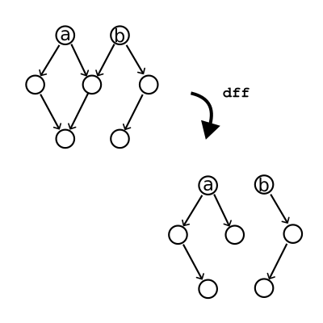
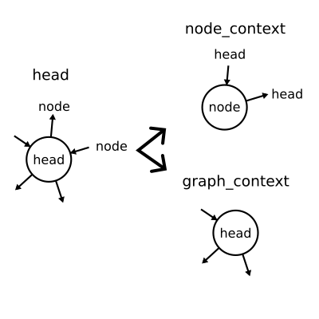
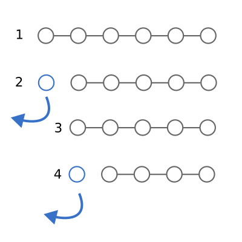
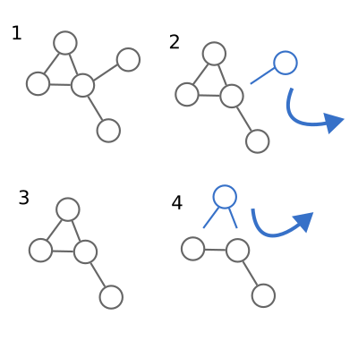
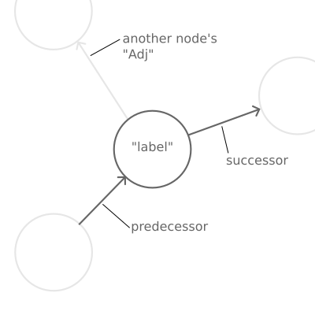
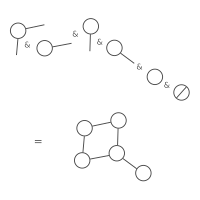
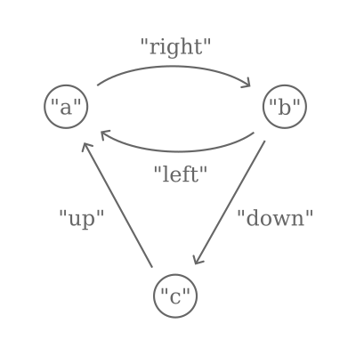

This article was originally published on
Medium (link)
Welcome back to this series on functional programming in Python! We’ve been looking at how to implement inductive
graphs (
Erwig 2001) in Python. In the first part, we looked at how to implement the
necessary data types, and in the second part we implemented some basic
functions.
In this section, I’ll show you how to implement topological sorting and Dijkstra’s algorithm for shortest paths using
the methods described in the paper. We’ll use new Python features like match statements to get very close to the
declarative Haskell description of these algorithms.
Topological Sorting
A topological sort of a graph is a list of its nodes which are
followed in an order where “earlier” nodes come before "later" nodes (for a more precise definition see the linked
Wikipedia article). Strictly speaking, this is only possible if the graph is acyclic — this means there are no loops.
It’s useful for resolving the “order” that processes should be evaluated in if, for example, your graph represents data
flow. Topological sorts are not unique.
Depth-First Forest
The paper describes an inductive graph algorithm for the topological sort which relies on a "depth-first forest" which
can be derived from the graph. What is this?

An illustration of the operation of "depth first forest" on a graph.
We can decompose the graph into a number of “trees”. Trees are like graphs but nodes only ever have one predecessor.
Starting at any node, we can get a single tree by removing it and following successors until we run out of nodes. To get
the forest, we just need to start searching from all nodes. The algorithm described in Haskell notation looks like this:
df :: [Node] -> Graph a b -> ([Tree Node], Graph a b)
df [] g = ([], g)
df (v:vs) (c &v g) = (Br v f:f', g₂) where (f, g₁) = df (suc c) g; (f', g₂) = df vs g₁
df (v:vs) g = df vs g
Implementation
Phew! That’s a confusing definition. Let’s break it down in Python. Firstly, the function says that given a queue of
nodes [Node] and a graph Graph a b, df returns a tuple (a Haskell-style tuple with a fixed length). The first
element of
the tuple is a queue of trees of nodes, and the second is a graph. Since we’re using methods to implement these
functions in Python, it’s almost the same:
class Graph(abc.ABC, typing.Generic[A, B]):
...
def _dff(self, nodes: tuple[Node, ...]) -> tuple[tuple[Tree[Node], ...], "Graph[A, B]"]:
...
The next line, df [] g = ([], g), says that if there are no nodes, we just return an empty tuple and the graph itself:
class Graph(abc.ABC, typing.Generic[A, B]):
...
def _dff(self, nodes: tuple[Node, ...]) -> tuple[tuple[Tree[Node], ...], "Graph[A, B]"]:
if not nodes:
return (), self
...
The line after this, df (v:vs) (c &v g) = (Br v f:f', g₂) where (f, g₁) = df (suc c) g; (f', g₂) = df vs g₁, says: if
we
can find the first node, v, in the graph, then calculate the forest for all of the successors of that node in the
graph
without that node. Then, carry on calculating trees with whatever nodes vs we haven’t yet looked at. We then
construct a
tree with the node at the head of the forest of successors, then return it alongside all the other trees we’ve found.
class Graph(abc.ABC, typing.Generic[A, B]):
...
def _dff(self, nodes: tuple[Node, ...]) -> tuple[tuple[Tree[Node], ...], "Graph[A, B]"]:
...
head, *tail = nodes # (v:vs)
match self.pop(head): # (c &v g)
case c, g:
f, g1 = g._dff(c.suc) # (f, g1) = df (suc c) g
f_, g2 = g1._dff(tuple(tail)) # (f', g2) = df vs g1
return (Tree(head, f), *f_), g2 # (Br v f:f', g2)
Why have I used match-case here? Well, what happens if we can’t find the node v in the graph? We just carry on with
the
other nodes, as in the final line of the algorithm df (v:vs) g = df vs g:
class Graph(abc.ABC, typing.Generic[A, B]):
...
def _dff(self, nodes: tuple[Node, ...]) -> tuple[tuple[Tree[Node], ...], "Graph[A, B]"]:
...
head, *tail = nodes # (v:vs)
match self.pop(head): # (c &v g)
case c, g:
...
case None:
return self._dff(tuple(tail)) # df vs g
So the match statement allows a nice clean syntax demonstrating both cases.
Finally, we can wrap the whole thing in a public dff method which just passes all of the graph’s nodes into the
function, so that we get back a forest that spans the whole graph:
class Graph(abc.ABC, typing.Generic[A, B]):
...
def _dff(self, nodes: tuple[Node, ...]) -> tuple[tuple[Tree[Node], ...], "Graph[A, B]"]
...
def dff(self):
return self._dff(self.nodes())[0]
The topological sort of the graph is derived from the depth-first spanning forest. We can walk through each tree from
the bottom up (using a function called postOrder). The reverse of this sequence is a topological sort!
class Graph(abc.ABC, typing.Generic[A, B]):
...
def _dff(self, nodes: tuple[Node, ...]) -> tuple[tuple[Tree[Node], ...], "Graph[A, B]"]
...
def dff(self) -> tuple[Tree[Node], ...]:
return self._dff(self.nodes())[0]
def topsort(self) -> tuple[Node, ...]:
return tuple(reversed(concat_map(Tree.post_order, self.dff())))
Isn't that sweet?
Dijkstra's Shortest Path Algorithm
Finally, let’s implement the inductive graph version of Dijkstra’s shortest path algorithm. There’s a bit of underlying
machinery here involving what the paper calls LRTrees and LPaths which I won’t get in to here, but feel free to take
a
look at the code. The important thing for the implementation is that LPaths are labeled lists of nodes which can be
compared using < — i.e. one is “shorter” than another. This means they can be used in a heap.
Definition
dijkstra :: Real b => Heap (LPath b) -> Graph a b -> LRTree b
This says that for a graph with node edges labeled with a real number, and a heap (a data structure where we can
efficiently get the smallest value) of paths, dijkstra will return a LRTree (a queue of labeled paths) representing
the shortest paths between a given node and all other reachable nodes.
dijkstra h g | isEmptyHeap h || isEmpty g = []
Simple enough: there are no short paths in an empty graph. For non-empty graphs, the heap should never be empty, because
we always have a zero-length path from a node to itself.
dijkstra (p@((v,d):_)≺h) (c &v g) = p:dijkstra (mergeAll h:expand d p c)) g
😱 What is this nightmare? In words, it says: if the first node v in the smallest path p in the heap can be found in
the graph, return that path and keep searching with v removed and a heap with that path removed and a set of new paths
starting at all the successors. What this means is that when a new, shorter path to a given node is found it replaces
the existing one.
Finally, if the shortest path’s first node v is not in the graph, we can just carry on with trying to find shorter
paths than the ones we’ve got:
dijkstra (_≺h) g = dijkstra h g
Implementation
Like the topological sort, this algorithm maps very nicely to Python. I’ve included the _expand method for
completeness:
class Graph(abc.ABC, typing.Generic[A, B]):
...
@staticmethod
def _expand(
item: float, lpath: "LPath[float]", context: Context[A, float]
) -> tuple[ImmutableHeap["LPath[float]"], ...]:
return tuple(
ImmutableHeap.unit(LPath((LNode(node, item + label), *lpath)))
for label, node in context.successors
)
def _dijkstra(self, heap: ImmutableHeap["LPath[float]"]) -> "LRTree[float]":
if not heap or self.is_empty: # isEmptyHeap h || isEmpty g
return LRTree()
p, h = heap.pop() # p < h
(v, d), *_ = p # p@((v, d): _)
match self.pop(v): # c &v g
case (c, g):
return LRTree(
(p, *g._dijkstra(ImmutableHeap.merge(heap, *self._expand(d, p, c))))
) # p:dijkstra (mergeAll (h:expand d p c) g
case None:
return self._dijkstra(h) # dijkstra h g
With a list of shortest paths, we now just need some wrapper functions to complete the implementation:
class Graph(abc.ABC, typing.Generic[A, B]):
...
def _spt(self, node: Node) -> "LRTree[float]":
heap = ImmutableHeap.unit(LPath((LNode(node, 0.0),)))
return self._dijkstra(heap)
def sp(self, s: Node, t: Node) -> tuple[Node, ...] | None:
return self._spt(s).get_path(t)
Note that there is a typo in the linked version of the paper which incorrectly defines spt, i.e. the shortest paths
from t, as
spt v = spt (unitheap [(v, 0)])
where it should read
spt v = dijkstra (unitheap [(v, 0)])
Validation
Let’s check it works! Wikipedia has an article on Dijkstra’s algorithm where it shows a simple small graph labeled 1–6.

https://en.wikipedia.org/wiki/File:Dijkstra_Animation.gif
The shortest graph from Node 1 to Node 5 goes through 3 and 6. Given everything we’ve implemented so far, we can now
construct this graph with all the edges and test our algorithm:
>>> graph = (
... Context(Adj(), Node(1), 1, Adj(((7, Node(2)), (9, Node(3)), (14, Node(6)))))
... & Context(Adj(), Node(2), 2, Adj(((10, Node(3)), (15, Node(4)))))
... & Context(Adj(), Node(3), 3, Adj(((11, Node(4)), (2, Node(6)))))
... & Context(Adj(), Node(4), 4, Adj(((6, Node(5)),)))
... & Context(Adj(), Node(5), 5, Adj(((9, Node(6)),)))
... & Context(Adj(), Node(6), 6, Adj())
... & EmptyGraph()
... ).undir()
>>> graph.sp(Node(1), Node(5))
(1, 3, 6, 5)
That puts a smile on my face.
Conclusion
We’ve seen how to implement some functional algorithms for graphs in Python, and how closely we can approach the Haskell
descriptions using Python syntax like destructuring and match statements. In the next and final part I’m going to give
my overall thoughts about this exercise, and draw some conclusions about functional programming in Python. See you
there!
References
- Erwig, Martin. “Inductive graphs and functional graph algorithms.” Journal of Functional Programming 11.5 (2001):
467–492.
This article was originally published on
Medium (link)
Hello! Welcome to the second part of this series on functional programming in Python. If you haven’t read the first part
yet, check it out here.
In this series, we’re implementing “inductive graphs” as described
in this paper (
Erwig 2001). In the first part, we
defined the basic data structures, and we’ll now move on to implementing the necessary abstract methods and some basic
algorithms. As a reminder, you can find all of the code for these articles at
the inductive-graph-algorithms repository
over on GitHub.
Abstract Methods
Take a look at Table 1 in the paper. It explains that for inductive graph algorithms, we need three basic features for
the graph:
- A test for emptiness.
- The ability to extract an arbitrary context from the graph.
- The ability to extract a specific context from the graph.
How we choose to implement these features is up to us. I’ve chosen to implement the test for emptiness as a property of
the graph, and the context extraction as a method .pop(node: Optional[Node]) on the graph:
class Graph(abc.ABC, typing.Generic[A, B]):
...
@property
@abc.abstractmethod
def is_empty(self) -> bool:
"""True if the graph is empty (contains no nodes), False otherwise."""
@abc.abstractmethod
def pop(self, node: Node | None = None) -> tuple[Context[A, B], "Graph[A, B]"] | None:
"""Extracts a given `node` from the graph.
Returns the node's context, and the remaining graph. If `node` is None, any
node may be extracted. If `node` is not in the graph, returns None.
"""
Now let’s implement these for our subtypes! For the empty graph, it’s easy enough:
class EmptyGraph(Graph[A, B]):
...
@property
def is_empty(self) -> bool:
return True
def pop(self, node: Node | None = None) -> tuple[Context[A, B], "Graph[A, B]"] | None:
return None
The empty graph is, obviously, empty, and we can never extract any context from it.
The inductive graph implementation is more complicated:
class InductiveGraph(Graph[A, B]):
...
@property
def is_empty(self) -> bool:
return False
def pop(self, node: Node | None = None) -> tuple[Context[A, B], "Graph[A, B]"] | None:
if node is None or node == self.head.node:
return self.head, self.tail
node_context, graph_context = self.head.pop(node)
if match := self.tail.pop(node):
sub_node_context, subgraph = match
return node_context | sub_node_context, graph_context & subgraph
return None
Let’s dig into pop here.
First, if node is None, it means we can return any arbitrary context alongside the remaining graph. The way we’ve
implemented InductiveGraph makes this very easy — we simply return the head, which is a context, and the tail, which
by
construction never refers to any node mentioned in the head. We can do exactly the same if the specific node requested
happens to be the head node.
If neither of the two conditions above is satisfied, it’s time for some recursion! First, we take the head context and
split it into two parts. The first part contains any references to node, inverted so that node is the node of the
context — this is node_context. The second part contains any references that are not to node.

Splitting the head into component parts.
Then, we try to pop node from tail, meaning that we start again with pop! Eventually, we must either reach node,
or find
that node is not in the graph. Either way, the recursion terminates at some point.
What happens if we reach node? pop returns a tuple of node_context | sub_node_context
and graph_context & subgraph. The
first part of this joins all of the node_contexts together into a single context - the one we want extracted! Every
reference to node in the graph is encapsulated in a new context with node at the center. The second part
re-constructs a
graph from all of the contexts which don't contain node - the remainder.
That's a lot of behaviour wrapped up in one little function, so let's go over it slowly once more.
- If the head is the context of the node we need, return it and the remaining graph.
- Otherwise, break the head into parts. One part contains any references to the node we need, the other part contains
no references to the node we need.
- Repeat the above process with the tail.
- Once we have the context of the node we need, join all the contexts that do reference the node into our extracted
context, and construct a graph from the contexts that do not reference the node.
Phew 😅 With that tricky part out the way, we can get on to some sweet implementations!
Basic Functions
Back in Part 1, I said that we could define functions on inductive graphs analogous to reduce and map for lists.
Let's
do that now!
ufold()
In the paper, reduce for graphs is called ufold. fold is an often-used synonym for reduce in functional
programming, and
ufold means the fold on graphs is "unordered," because the nodes are, in general, traversed in arbitrary order.
The paper describes the ufold function in the following way:
ufold :: (Context a b -> c -> c) -> c -> Graph a b -> c
ufold f u Empty = u
ufold f u (c & g) = f c (ufold f u g)
This means: take a graph, a starting value of type c, and a function which takes something of type c and a Context
to
produce a result c. ufold will then produce a result of type c. Yes, it's a higher-order function which takes
another
function as a parameter! ufold over an empty graph is just the starting value, but for anything else we extract an
arbitrary context, then apply the function over that context and the result of ufold on the remainder. More recursion!
Thankfully, this is actually pretty concise in Python:
class Graph(abc.ABC, typing.Generic[A, B]):
...
def ufold(self, fn: typing.Callable[[Context[A, B], C], C], u: C) -> C:
"""Un-ordered fold."""
if self.is_empty:
return u
head, graph = self.pop() # c & g
return fn(head, graph.ufold(fn, u)) # f c (ufold f u g)
nodes()
How do we use .ufold()? Well, let's say we want to get the nodes of the graph. In Haskell syntax, the function looks
like this:
nodes :: Graph a b -> [Node]
nodes = ufold (\(p, v, l, s) -> (v:)) []
In simple words, this says that the nodes of the graph are just appended one by one to an initially-empty list. In
Python, it looks like this:
class Graph(abc.ABC, typing.Generic[A, B]):
...
def nodes(self) -> tuple[Node, ...]:
"""The nodes of the graph."""
# ufold (\(p, v, l, s) -> (v:)) []
return self.ufold(lambda context, result: (context.node, *result), ())
That's pretty concise, and again it mirrors the Haskell definition pretty closely.
gmap()
gmap is the graph's equivalent of map and we can use ufold to implement it!
gmap :: (Context a b -> Context c d) -> Graph a b -> Graph c d
gmap f = ufold (\c -> (f c &)) Empty
In other words, gmap is a function that takes a graph and a function that converts a context into another context, and
produces another graph. We can implement it by applying the function to each context, and constructing a graph from the
result. In Python:
class Graph(abc.ABC, typing.Generic[A, B]):
...
def gmap(
self, fn: typing.Callable[[Context[A, B]], Context[C, D]]
) -> "Graph[C, D]":
"""Convert the graph into another graph via `fn` over its contexts."""
# ufold (\c -> f c &) Empty
return self.ufold(
lambda context, result: fn(context) & result, EmptyGraph[C, D]()
)
Conclusion
The inductive graph definition requires just three features: a test for emptiness, the removal of an arbitrary node's
context, and the removal of a specific node's context. With those in place, we can create some very succinct functions
to form the basis of our functional graphs: ufold, and gmap.
In the next part, we'll implement some more complex algorithms including Dijkstra's algorithm and topological sorting.
References
- Erwig, Martin. "Inductive graphs and functional graph algorithms." Journal of Functional Programming 11.5 (2001):
467–492.
This article was originally published on
Medium (link)
If you've ever read articles about functional programming in Python, you probably already know about map, filter, and
reduce, which are useful functions for functional programming using lists. However, if you're like me, you may have
sometimes felt that articles like that are a bit shallow, and don't really teach you anything about how to use Python as
a functional programming language in general. I'd like to show you a more challenging functional programming problem,
and demonstrate that Python has a great syntax for writing elegant, concise functional code.
This will be a four-part series. In this part, I'll be describing the problem of functional graph algorithms, and
setting up basic data structures. In Part 2, I'll implement the basic functions we'll need to write more expressive
algorithms, which we'll cover in Part 3. Finally, I'll give you my final thoughts on this exercise (a "retro", if you
like) in Part 4.
You can find all of the code for these articles at
the inductive-graph-algorithms repository over on GitHub.
The Problem
Many programmers will have had to do some work with data structures like trees, such as JSON data or web documents, or
graphs, such as are used in data processing frameworks like Airflow. A few months ago, I was working on designing a
system with a graph-like structure. I'm a big fan of functional programming, so I started wondering: how does a
functional program implement algorithms like topological sorting?
In the world of imperative programming, topological sorting is not very difficult — Kahn's algorithm and a depth-first
search algorithms are both described on the Wikipedia page linked above. However, both rely on stateful mutations of the
graph's nodes, because they need us to keep track of visited nodes via a label. Stateful changes should not be part of
our functional implementation.
The Solution
After a little bit of googling, I came
across this paper
(Erwig 2001), which describes the principle of "inductive"
graphs, and forms the basis of Haskell's functional graph library fgl. I'll try to quickly explain inductive graphs by
analogy to a list, but for a more detailed explanation see
this StackExchange answer and its linked blog post — they're
both excellent.
When we take a sequence like a list or a tuple, and remove an item, we produce a pair: the item, and a new list or tuple
with all the existing items except for the one we just removed. We can then repeat the operation on the new list.
Functions like map, filter, and reduce can be concisely defined because of this repetition.

Basic operation for functions over lists: 1) Start with a list of any length. 2) Remove the first item and perform some
operation. 3) You now have a smaller list. 4) Repeat from step 2.
An inductive graph has a similar property. Instead of removing a single item, we remove a node and all of its connected
edges, returning a graph without any reference to the node we just removed. We can then repeat the operation on the new
graph. This means we can define functions analogous to map, filter, and reduce for an inductive graph, and go
further,
implementing depth-first walks, shortest-path algorithms, and, indeed, topological sorts.

Basic operation for inductive functions over graphs: 1) Start with any graph. 2) Remove a node and all of its edges and
perform some operation. 3) You now have a smaller graph. 4) Repeat from step 2.
Implementation
Notes
The paper describes its data structures and functions in Haskell syntax, so we need to work out how to convert this into
Python. I've generally adopted the following approach:
- Types and data types are implemented as classes, and where the types need to be destructured I've
implemented
__iter__
so that we can use Python's destructuring (for example x, *y = […]) to closely match the definition.
- I've implemented most of the functions as methods on the classes, rather than external functions, because it keeps
the
code organised and "more Pythonic".
- "Queues" are ordered sequences — I've used tuples rather than lists to prevent accidental mutation. In some
algorithms,
the order doesn't matter and for these cases I've used the builtin
frozenset, rather than plain sets, again to
avoid
accidental mutation.
- Later in the paper, a "heap" is used for shortest-path algorithms. Python has built-in efficient heap algorithms in
the
heapq package, but these rely on mutating lists in-place. I implemented a wrapper class which helps ensure
immutability.
Node
The very first type described in the paper is the type
That's right, nodes are integers. Actually, we can think of this as being like the index of an item in the list — the
node type is the "index" of the node in the graph. In Python:
class Node(int):
"""A node.
For convenience, nodes are represented by integers.
"""
Simple!
"Adj"
This is a bit more abstract. It means that Adj is a sequence of tuples. Each tuple represents an edge in the graph,
and
b represents the edge's label, which can be anything, so we leave it generic. Note that edges are directed: Adj may
describe a connection to or from a given node, but by itself it doesn't care which.
class Adj(collections.abc.Sequence[tuple[B, Node]]):
"""Adjacency relationships."""
labeled_nodes: tuple[tuple[B, Node], ...]
def __init__(self, labeled_nodes: tuple[tuple[B, Node], ...] = ()):
self.labeled_nodes = labeled_nodes
def __repr__(self):
return f"Adj({self.labeled_nodes!r})"
def __len__(self):
return len(self.labeled_nodes)
def __getitem__(self, item):
return self.labeled_nodes[item]
def __eq__(self, other):
return self.labeled_nodes == other.labeled_nodes
def __add__(self, other):
return Adj(self.labeled_nodes + other.labeled_nodes)
I've made this class inherit from the Sequence class, which means if we implement __len__ and __getitem__ we get
iteration for free. I've also specified __eq__ and __add__ so that the class behaves like a tuple.
Context
type Context a b = (Adj b, Node, a, Adj b)
More abstract again! This says that a "context" comprises four parts: an adjacency relationship, a node, the label of
that node (a), and another adjacency relationship. The first Adj represents edges directed towards Node, called
"predecessors", and the second Adj represents edges directed away from Node, called "successors". It's important to
note
that, for inductive graphs, this doesn't have to be all of the connected nodes, because other Contexts may define
additional Adj relationships.
There are two generic types here: a is the type of the node's label, and b is the type of the edge's label.

Anatomy of a "Context": predecessor edges pointing to this node, successor edges pointing away from this node, and a
label of arbitrary type on the node itself. Note that a "Context" doesn't necessarily refer to all of the edges
connecting into a node, because these might be parts of other "Context"s.
class Context(typing.Generic[A, B]):
"""A context.
A node's context describes (some of) its surroundings, including its label, its
adjacent predecessors and its adjacent successors.
"""
predecessors: Adj[B]
node: Node
label: A
successors: Adj[B]
def __init__(
self,
predecessors: Adj[B],
node: Node,
label: A,
successors: Adj[B],
):
self.predecessors = predecessors
self.node = node
self.label = label
self.successors = successors
def __repr__(self):
return f"Context({self.predecessors!r}, {self.node!r}, {self.label!r}, {self.successors!r})"
def __eq__(self, other):
return (
self.predecessors == other.predecessors
and self.node == other.node
and self.label == other.label
and self.successors == other.successors
)
Graph
Finally, we can describe a graph itself:
data Graph a b = Empty | Context a b & Graph a b
This says that a graph is either an empty graph OR a context attached (using the operator &) to a graph.
Python doesn't have variant types like this, but we can use inheritance instead. We'll define an abstract Graph class
that will have two subclasses: EmptyGraph and InductiveGraph.
class Graph(abc.ABC, typing.Generic[A, B]):
"""An abstract graph"""
The InductiveGraph will contain a "head", which is the Context a b, and a "tail", which is another graph.
class EmptyGraph(Graph[A, B]):
"""An empty graph, containing no nodes or edges."""
def __repr__(self):
return "EmptyGraph"
class InductiveGraph(Graph[A, B]):
"""An inductive graph.
The `head` of the graph is a context that can only refer to nodes in the `tail`,
which is also a graph.
"""
head: Context[A, B]
tail: Graph[A, B]
def __init__(self, head: Context[A, B], tail: Graph[A, B]):
self.head = head
self.tail = tail
def __repr__(self):
return f"{self.head!r} & {self.tail!r}"
Construction
As well as the data itself, we can implement the constructor operator & using Python! In the paper, we imagine
building
up graphs right-to-left, starting with the empty graph, and adding on context until we reach the whole graph:
Context(...) & Context(...) & Context(...) & EmptyGraph()

Principle for constructing an inductive graph: start with the empty graph (right hand side). Then, attach the first
context — the "Adj" values must be empty, because there are no nodes! Then, attach contexts one by one; each can only
refer to nodes that are already in the graph.
Each context must only refer to nodes which are already in the graph (or, to make loops work, itself).
In Python, operators resolve left-to-right, so to emulate this behaviour I've introduced a _ContextPartial class which
can collect up left-hand-side contexts until it reaches a graph, at which point it resolves. As a result, we can define
the __and__ operator on the Context class like so:
class Context(typing.Generic[A, B]):
def __and__(self, other):
match other:
case Context():
return _ContextPartial((other, self))
case InductiveGraph() if self.node in other.nodes():
raise NodeExistsError(
f"context {self} refers to existing node {self.node} in graph {other}"
)
case InductiveGraph() if disjoint_nodes := tuple(
node
for node in self.pre + self.suc
if node not in other.nodes() and node != self.node
):
raise NodeDoesNotExistError(
f"context {self} "
f"refers to adjacent nodes {disjoint_nodes} "
f"which are not in graph {other}"
)
case InductiveGraph() | EmptyGraph():
return InductiveGraph(self, other)
This describes the behaviour when we do something like:
context_a & context_b & EmptyGraph()
When the context is added to an inductive graph where the node is already in the graph, or if the context's Adj nodes
refer to nodes that are not in the graph, we have to raise an error. Otherwise, regardless of whether it is an
inductive
graph or an empty graph, we can construct a new graph with the context as the head.
There are a couple of methods and properties here — .nodes(), .pre, .suc — which we haven't seen yet. More on
those in
the next part!
Usage
After these definitions, we're ready to follow the first example in the paper, Figure 1, which constructs a graph using
edges labeled "left", "right", "up", and "down", and nodes labeled "a", "b", and "c".
([("left", 2), ("up", 3)], 1, "a", [("right", 2)]) &
([], 2, "b", [("down", 3)]) &
([], 3, "c", []) &
Empty
becomes in Python:
graph: InductiveGraph[str, str] = (
Context(
Adj((("left", Node(2)), ("up", Node(3)))),
Node(1),
"a",
Adj((("right", Node(2)),)),
)
& Context(Adj(), Node(2), "b", Adj((("down", Node(3)),)))
& Context(Adj(), Node(3), "c", Adj())
& EmptyGraph()
)

The node "a", with two predecessors and one successor, is attached to "b", with one successor, and then attached to "c",
with no predecessors or successors, and finally the empty graph.
Next up
In the next article, we'll work into the next parts of the paper, which describes the properties needed from the
inductive graph data types, and implement them in Python, and use them to implement some simple graph algorithms. Then,
in the final section, we'll tackle some more difficult algorithms like topological sorting. Thanks for keeping up with
me so far!
References
Erwig, Martin. "Inductive graphs and functional graph algorithms." Journal of Functional Programming 11.5 (2001):
467–492.
So; after deciding that the full dinosaur family tree might be a little too ambitious for a showcase React project, I've brought myself back down to earth with something still challenging but manageable, and it's something I've wanted to tackle for a little while: an itenerary planner.
Here's the basic idea: when I go for a long trip, especially one overseas or involving multiple stops, I normally start to piece things together in a spreadsheet detailing the start, end, type of journey being made, and so on at each stage of the trip.
Often there are files or links associated with each stage that I'd also like to link, like PDFs of train tickets, Visas, or whatever.
However, there's often a lot of manual shuffling and rewriting for this kind of work - say I want to introduce an intermediate stop or two and I have to rearrange the origin and destination of the surrounding stops.
That's a pain and adds an element of tedium to the planning process.
It'd be nice to have a little app that did all that for me, without going into the complexities of apps like AirBnB or DesignMyNight or whatever that have a lot of connections going in (and out).
I just want to plan my trip, my way.
Now, in all honesty, it's unlikely that I can put something together here that will actually become the itinerary planner going forward.
There's a lot to be said for the flexibility of, say, a spreadsheet (or, it occurs to me, a Notion doc).
However, there are some really nice interactive components we can build here and as a project it's a pretty solid one, that I'm guessing visitors (hey, you!) can relate to, even if it's not something you (or I) are actually likely to use.
I'll probably next write when I've got a working prototype, because for now the whole thing is very much in the set-up phase.
Until then.
Note to self: build a table of contents for this page as well.
Perhaps even some smooth scrolling, idk.
So; a couple of months later, a glass of wine in hand, with football apparently coming home, I'd like to reflect a little on why there has been such a long break between Build Days 3 and 4, and think a little bit more critically about some of the projects that I'd like to tackle going forward.
I'd started right away on the next project.
The plan was (seemed) quite simple.
I wanted a webapp - something to flex the old TypeScript muscles - which would be a searchable, interactive view of the whole Dinosaur family tree, starting with the earliest proto-dinosaurs and running through to the last species left alive when the meteorite hit.
I've always had an interest in dinosaurs (especially when younger - my mum once sent me in on a dress-up day as a paleontologist) and it seemed like a fun way to revisit some of that while having a go at a new build that I don't think has been attempted before.
How naïve I was.
Let me break down a couple of the challenges I faced.
1. The Challenge of Trees
I love me a tree structure.
I guess you could call me a linear algebraist by training (my PhD focused on things like NMF and data clustering) so graphs, nodes, and trees are something of a new language to me, but I've been using heirarchical structures for some frontend stuff at work and thinking about tree types in TypeScript got me really interested.
Feeling complacent (a family tree is just a tree, right?) I immediately charged down the route of encoding all the different taxonomic ranks (Genus, Class, Phylum and so on) as nodes in my future tree structure.
That idea fell apart pretty quickly, because as soon as I started looking at how to structure the actual cladograms (new bit of vocab for me there), I realised that many, if not most nodes didn't actually have a taxonomic rank ascribed to them.
Thinking back, that makes total sense.
The classification of a species clearly doesn't depend strictly on its actual evolution.
If that were true, then any given dinosaur species would simply have fewer entries in its classification tree than a modern animal.
The classification is actually closer to the vector/cluster description of a species than its family tree description.
Instead of simply grouping by phylum/class/order/family/genus/species, I'd have to take a much more sophisticated approach to encoding the family tree of each dinosaur.
No problem; more work, no doubt, and a less nicely-structured output (lots of nesting necessary) but doable.
I quickly ran into challenge 2.
2. The Challenge of Actual Science™
Although I'd anticipated challenges like the one above (it's a technical problem, after all, and creating good data structures is part of all coding) this next problem was not only the one that's slightly scuppered the project, but one I totally failed to see coming.
It turns out that - shockedpikachu.jpg - science isn't done.
In other words, there is ongoing research into the family trees of dinosaurs.
I know!
I'd decided to start small, work on the Lambeosauridae family first to nail down the interface and the data structures before working in the rest of the group.
It was going well - I'd marshalled a small set of species, arranged a tree for them, and was about ready to start coding up the frontend when I realised there was going to be a real logical problem.
What happens when scientists disagree about the tree?
Naively I thought I might be able to present a menu of options to the end user.
"Would you like Prieto-Marquez 2013 or 2015 [citation]?"
That by itself would be fine apart from the problem of tree-hopping species.
Depending on who you talk to, for instance, Arenysaurus is either deep into the Lambeosaurini tribe or totally outside it!
Crazy!
Nightmare!
From a coding perspective this does actually pose some serious logical problems.
Let's say I've picked (higher up the tree) some cladogram proposed which shuffles around the Lambeosaurini tribe.
We then have no way of knowing which of the two proposed cladograms for Arenysaurus is compatible.
It's simply not possible to reconcile the trees.
What's to be done?
Now if I were going to be really sophisticated, I could take some of the algorithms that are used to generate the cladograms and expose those to the end-user.
That way, they could rearrange the whole tree at will in a nice interactive manner, and moreover perhaps explore some of the interesting differences between them.
That, however, is a much bigger project than I can take on (though the prospect of a second PhD is tempting).
For now, I'm going to have to let sleeping dinosaurs lie, and instead have a crack at something more manageable.
Until the next one, whenever that is.
commit
Today we publish. The plan is to use GitHub pages, which at first glance seemed
pretty simple but none of the documentation immediately points to how to run
the repo through a build process before publication. So finding that out is
the immediate priority.
Half an hour in and this is not nearly as easy as I expected. It seems these
custom builds just aren't really a part of the GitHub ecosystem and... I get
that... but I really think it ought to be achievable with GitHub actions.
tag
And another half an hour later and we're live at bm424.github.io!
Turned out to be not that difficult, just a heavy reliance on existing published
actions, which isn't something I'm very used to.
I'm going to write down what happened for my own future reference.
Self-Tutorial
There are three basic steps needed:
- Checkout your own repository. This is accomplished using the public
"checkout" action, visitable here.
This is surprising to me, as I'd have assumed this was more or less an
automatic part of the process, but I suppose explicitly doing this is better
than implicitly assuming it.
- Create a version of your own build action. This was actually pretty
simple, you can directly reference your own Docker image and the entire
source repo is mounted in, so as long as you're using relative file names
(normally a sad accident, but here a happy one) it pretty much successfully
built first time, although I was a little confused about where the action
was supposed to live (turns out top-level in the repo is fine).
- Use yet another public image, this one sourced from a nice little tutorial
here,
to push the site to your branch. A quick skim through the source code
suggests this does much of the same manual stuff one might have implemented
(git push to branch etc) but packaged up nice.
Moving forward, I'm hoping I'll remember to refer to this repo as a canonical
example for myself.
Until next time.
print()
So, main changes today include adding support for each posts's metadata,
handling multiple posts building to the same page in the correct order,
and some small updates to improve the site's aesthetics including some
page hierarchy and correct scaling on mobile.
One of the things I find it's really important to do, particularly in personal
projects, is write a few notes to yourself to remind you simply what commands
to write to get things working again. It sounds obvious, but a lot of the actual
minutes spent on a programming project for me are spent working out the correct
order of operations.
For this project, the relevant command is a simple
docker-compose build && docker-compose run main
but in a web project with multiple moving parts these kinds of crucial lines
can be easy to forget or get lost in a maze of possible, often redundant (in
the sense of overlapping functionality) scripts. So when I write a README file,
it's as much for me as for anyone else who might pick up the project.
.split()
One thing that came up while coding today was the issue of post permalinks.
I'm not even going to attempt to go there. The quick solution I settled on
was to link to the posts using the file name. As I anticipate I'll be changing
those much less than the titles of the posts, they ought to be permanent enough,
and they map to the titles sufficiently closely to be sensible in the URL.
Come to think of it, this may be similar to what professional static site
generators do, given the mismatch between URLs and post titles that I sometimes
see.
On an unrelated note, using a NamedTuple was a good way to pass values into
the Jinja templates quickly, but it's quickly showing its limitations. I've
been using Pydantic a lot at work and I like it a lot, we'll see if I need to
get it involved here, depending on how much the complexity of the NamedTuple
structure increases.
:focus
To wrap up, I spent a fair bit of time faffing around with the style of the
anchor links to the posts. This is actually the kind of thing I tend to find
really fun, because webpage style is one of the ways it's easy to get a little
creative in projects like this. That said, I often get carried away in style
over substance. Part of this project is to focus on getting the content out,
rather than perfecting style, so with these final changes I'm going to call
it a day and implement the GitHub pages build another time.
import
A couple of hours later and we have a working static site builder running
locally using Docker, Python, Jinja2, markdown, and not much else. On the
whole I'm pretty happy with the timing, particularly considering a fairly
significant chunk of that was actually writing the build day 0 content.
I initially thought I'd be needing a running server to see changes live, but
quickly realised that was going to be unnecessary - the Docker rebuild was
more than quick enough to get a fast feedback loop going, and the most
fiddly bit, the CSS, I could actually just do in the build styles, refreshing
the page in the meantime, then copy back into the source when done.
next()
Simple enough so far. However, having now added this next file, I need to make
a couple of changes to ensure one can navigate to past entries, and then it
should be a simple case of deploying to GitHub pages.
I say that. I've done it before, but quite a long time ago (my company uses
GitLab, so I'm a little out of practice)... so see you in the next entry.
wraps()
I've slightly backdated this post because these reflections were based on the
hour or two of work I did after writing the first day's post a couple of days
ago, and I want to spend a bit of time after today (2021-05-26) reflecting
on today's work instead. Just for transparency's sake...
def
All projects begin somewhere, and this is where this one begins.
Over the next few weeks and months, I'll be building a personal
portfolio/showcase of code projects, each chosen for both personal interest
and to demonstrate my use of particular technologies, such as the web stack,
machine learning, or programming interface development.
__doc__
Why?
Well, firstly, a lot of the code I write is for the company I work for,
and so while the things I can do has expanded significantly over the last few
years, none of it is particularly reflected in my GitHub profile, and I'd like
to bring that up to date.
Secondly, I want to create a coding space for myself that is less restricted
by deadlines and "product" pressure, to try and focus on best practices,
and to exercise older programming skills I used to use regularly (such as
in training neural networks).
And lastly, I think the projects I've lined up are going to be a lot of fun,
and by tackling some of them I hope I can rekindle my enthusiasm for hobbyist
programming.
__call__
So what are these projects to be? In order of increasing complexity:
- This! A simple static site generator, from scratch, written in Python and
markdown, where I can record my progress and thoughts on each project
as I go.
- A bit of a personal exercise, writing a simple Schrödinger equation
solver in Python, with graphical output. If it goes well, I'll convert
it into a web app.
- A dinosaur family tree/cladogram, implemented as a web app using React
and/or Redux, interactive, searchable, and live on the web.
- A board game, called Bao, which I learned as a kid on holiday in Zanzibar,
implemented in Rust using Bevy.
- An open street map tile neural network tile generator, implemented in
Python and, if all goes well, deployed as a web app.
__exit__
This particular post was written before any code, and represents simply
the starting point for project 1. Next post, I'll be writing up reflections
on the implementation of this little custom static site generator. If you've
read this far, thanks! And see you next time.
{kind=link}